27.1 sin函数的实现
根据我们的微积分知道,若y=sin(x)我们知道导数是cos(x)
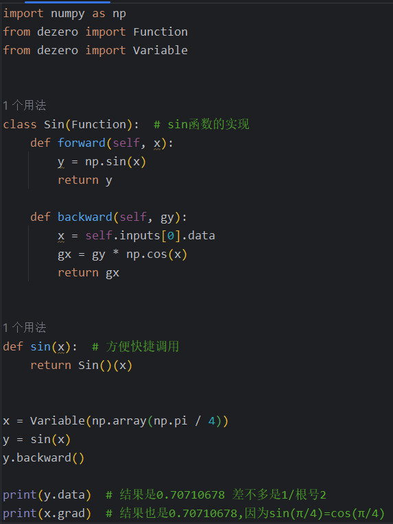
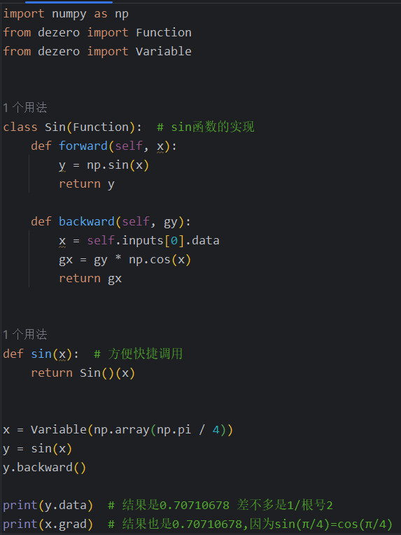
27.2 泰勒展开的理论知识
-
泰勒多项式的概念,通过获得该点的各阶导数的值,从而从a来近似寻找x的精确值.
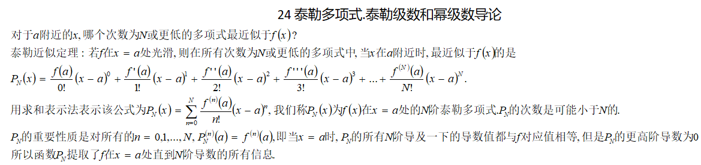 -
特殊的泰勒级数,麦克劳林级数,当a=0的情况下的泰勒级数,也就是用0这么远的距离来近似x位置的结果
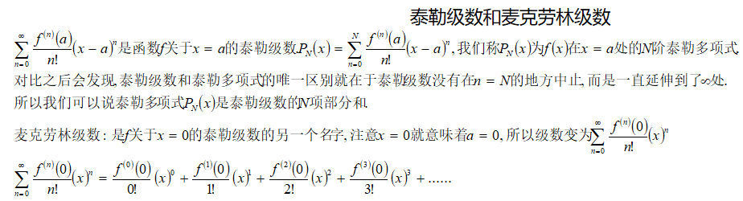 -
常见的麦克劳林级数
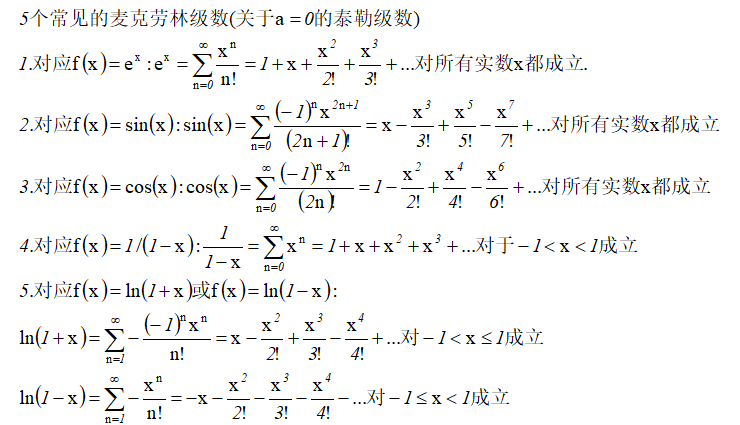
27.3 泰勒展开的实现
通过math模块的fractorial来计算阶乘,使用麦克劳林级数来近似
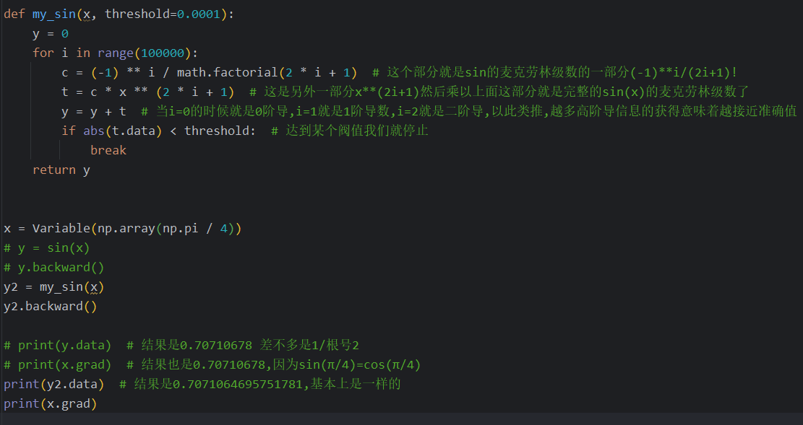
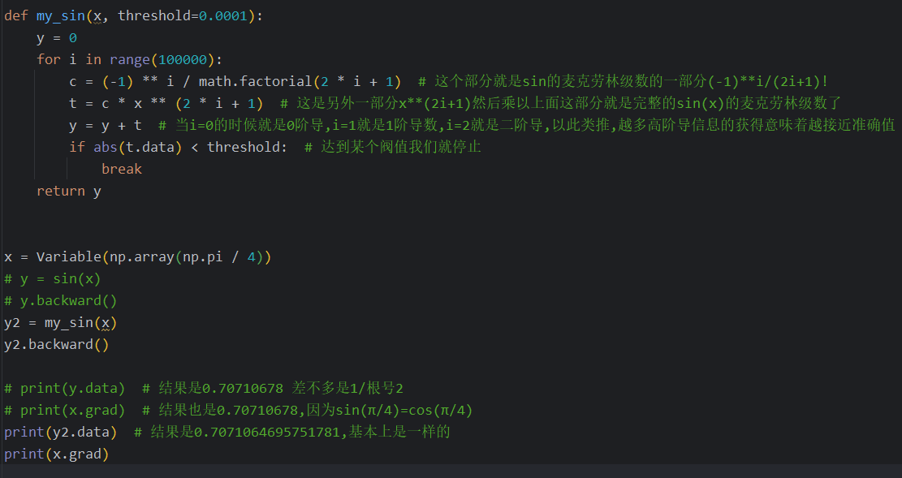
27.4 计算图的可视化
调用我们前面封装好的函数来绘制计算图
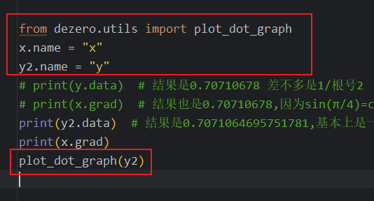 调用DOT得到的计算图结果
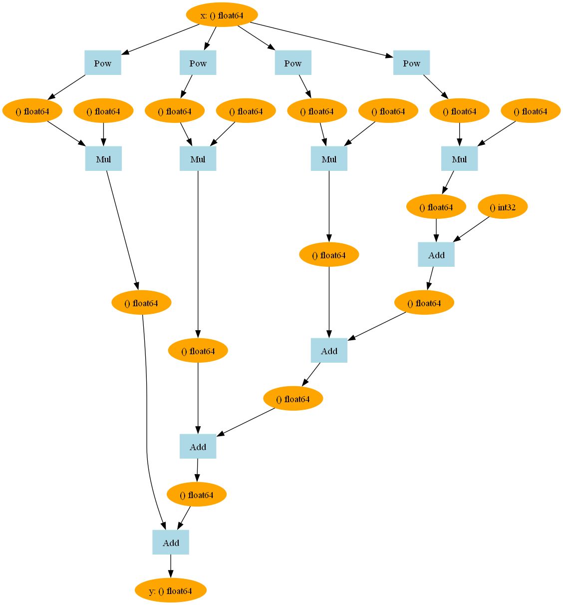
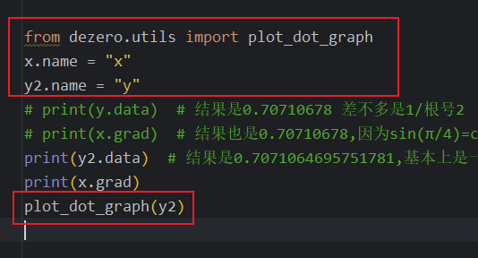 调用DOT得到的计算图结果
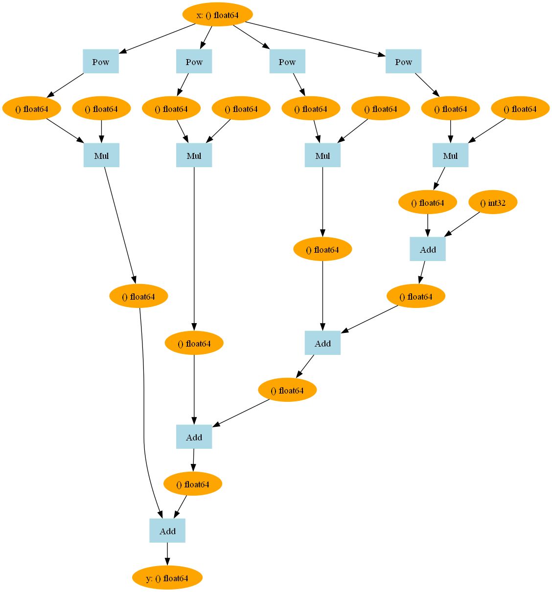